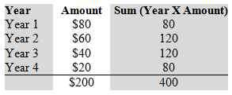

The length of time the principal of a debt issue is expected to be outstanding. Average life is an average period before a debt is repaid through amortization or sinking fund payments. To calculate the average life, multiply the date of each payment (expressed as a fraction of years or months) by the percentage of total principal that has been paid by that date, summing the results and dividing by the total issue size.
Also called "weighted average maturity" and "weighted average life."
Average life is calculated to determine how long it will take to pay the outstanding principal of a debt issue such as a t-bill or bond. For example, assume an annual-pay, four-year bond has a face value of $200 and principal payments of $80 during the first year, $60 for the second year, $40 during the third year and $20 for the fourth (and final) year. The average life for this bond would be calculated as:
Average life = 400 / 200 = 2 years. This bond would have an average life of two years against its maturity of four years.
{kind=link}